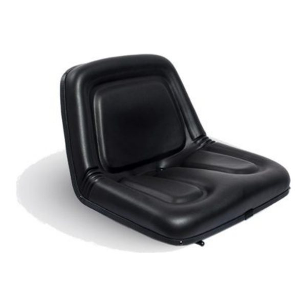
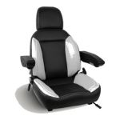
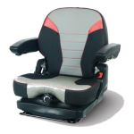
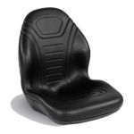
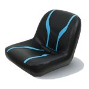
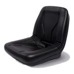
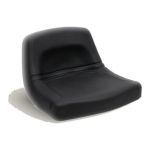
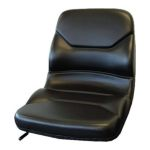

Available
Email for a quote
John Deere TLS-G017 Lawn, Garden & Turf Seat
| OEM part number | TLS-G017 |
| Fits | John Deere, Toro, Kubota, Husqvarna, Cub Cadet, Exmark & more |
| Use | Garden and agricultural machines |
| Features | Wide cushion |
| Category | Seats |
| Type | Aftermarket replacement |
Send us the quantity you need and we'll reply with pricing, usually within 24 hours. Not the exact part? We can source it. Send the part number or a photo.
More Seats
TLS-G001Lawn, Garden & Turf Seat

TLS-G002Lawn, Garden & Turf Seat
TLS-G003Lawn, Garden & Turf Seat
TLS-G004Lawn, Garden & Turf Seat
TLS-G005Lawn, Garden & Turf Seat
TLS-G006Lawn, Garden & Turf Seat
TLS-G007Lawn, Garden & Turf Seat
TLS-G008Lawn, Garden & Turf Seat